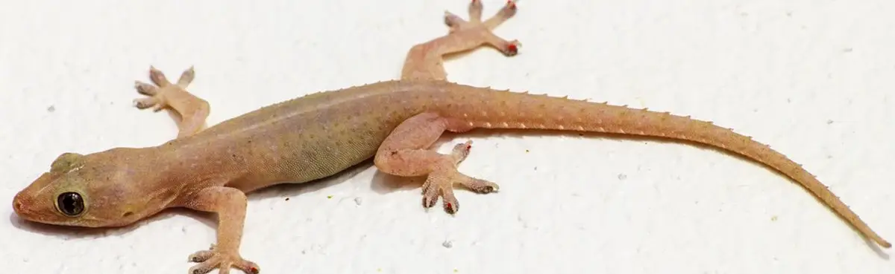

Mengontrol Populasi Hama Cicak di Rumah

Bila kita tinggal di perrumahan tapak yang tak jauh dari area persawahan atau perkebunan, kehadiran cicak seringkali menjadi teman sehari-hari. Seperti yang telah kita ketahui, binatang merayap ini dapat berfungsi untuk mengurangi populasi nyamuk serta berbagai serangga kecil lainnya.
Penyebab Peningkatan Populasi Cicak di Rumah
Namun, pada saat-saat tertentu, seperti pada musim penghujan, jumlah populasi cicak bisa jauh melonjak dibandingkan pada masa-masa puncak musim kemarau. Hal ini disebabkan oleh banyaknya jumlah makanan alami yang tersedia untuk para cicak. Selain bermanfaat untuk mengusir nyamuk yang memang jumlahnya meningkat pesat, lonjakan populasi cicak juga dapat membuat kita kejatuhan bom atom berupa kotoran cicak saat sedang menikmati damainya rebahan. Niatnya santai, jadi harus cuci muka, ya.
Solusi: Krim Pengontrol Populasi Cicak
Oleh karenanya, ada saatnya kita perlu menggunakan krim untuk mengontrol populasi cicak. Nah, krim ini, biasanya dijual online dan berwarna hijau mirip daun. Kemasannya mirip pasta gigi, namun dalam ukuran lebih pendek. Krim bekerja dengan cara menarik perhatian cicak agar menyantap krim tersebut dan kemudian populasi cicak pun berkurang.
Cara Menggunakan Krim Pengontrol Populasi Cicak
Lantas, apa yang perlu kita lakukan untuk mengurangi lonjakan populasi cicak di rumah? Berita bagusnya, sekarang kita tidak harus memanggil petugas pest controller untuk menguranginya. Nah, ini dia tips untuk mengontrol lonjakan populasi cicak menggunakan krim anti cicak:
- Pelajari jalur yang kerap dilewati oleh para cicak di rumah.
- Siapkan isolasi kertas (masking tape), lalu potong seperlunya, biasanya sekitar 5-7 cm
- Oleskan krim cicak pada permukaannya. Penggunaan masking tape ini dilakukan agar tembok rumah tetap terjaga kebersihannya dan tidak terkena bercak-bercak hijau dari krim anti cicak tersebut. Kita bisa menggunakan krim sekitar sebesar volume 2 butir jagung.
- Tempelkan masking tape yang sudah diolesi krim pada tempat-tempat yang kerap dialalui cicak. Populasi cicak pun akan terkontrol, ditandai dengan cicak yang mulai berjatuhan sesaat setelah memakan krim.
Bagaimana, mudah bukan mengatasi lonjakan populasi cicak di rumah dengan cara sederhana. Sedikit catatan, bila menggunakan krim ini, kita perlu secara berkala memeriksa jasad cicak yang berjatuhan di sekitar rumah. Hal ini penting untuk mencegah rumah jadi beraroma tidak enak karena bangkai cicak.
Video Penggunaan Krim Pengontrol Populasi Cicak
Video tentang menggunakan krim untuk mengontrol lonjakan populasi cicak dapat dilihat di bawah ini. Semoga bermanfaat!